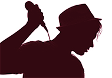

Contenu:
Création et promotion d'images publiques et politiques, création de logo et slogan, maintenace de relations avec les MÉDIAS, avec les organisations externes et les autorités, organisation des évènements.
Formation de Leadership, diagnostic de soi, vaincre sa timidité et gagner sa confiance en soi, art de bien parler «Eloquence» (Ne plus avoir peur de parler en public, prise de parole en public: gestuelle, posture, gestion de l’espace)
Apprendre les choses importantes pour les Leaders (Être charismatique, avoir des habitudes des gens succès, devenir un homme de valeur ou extraordinaire, être un vrais leader).
Sovir plus à propos de Business (Modele économique, Business Model "CANVAS", Business Plan, trouver des idées pour créer une entreprise, gérer et reussir son entreprise).
Pourquoi Leadership et Développement personnel?
A nos jours, le Leadership et le développement personnel sont l’unes des choses les plus recherchées au monde. La formation de Leadership et Développement personnel est importante pour tous ceux qui veulent changer, améliorer sa vie, c’est-à-dire pour rendre plus succès et heureux dans la vie. Brièvement, on peut dire que tous les gens qui ont du succès dans la vie sans doute ont commencé avec le développement personnel, travaillé avec sa soi, enfin devenir Président de la République ou millionnaire, Businessman ou quelqu’un d’autre. A vrai dire, pour être grande personne dans la société ou pour être quelqu’un de différent des autres, c’est n’est pas si facile si on ne travaille pas d’abord avec notre soi, travailler dur avec ses personnalités. Même dans la vie courante, il n’y a rien de possible si on ne commence pas à changer quelque chose de notre soi qui nous embêtent de vivre. Avant d’être heureux et d'être grande personne, on a beaucoup de choses dont on doit se débarrasser. Vous savez qu’il a beaucoup de gens qui souffrent dans leur vie personnelle, souffrent avec leurs propres caractères, et disent « Pourquoi je suis comme ça ?». Il y a des gens qui ont des difficultés pour communiquer avec les autres, surtout de parler avec les sexes opposés. Beaucoup de gens souffrent de gérer leur temps, souffrent pour trouver des financements, d’avoir des capitaux pour être heureux, difficultés d’avoir des amis, trouver l’homme de sa vie et notamment des problèmes de vivre dans la société.
Parmi les fonctions et services notre Agence:
1. Apprendre le leadership et le développement personnel, 2. Créer l’image d'une personne (Imagemaker), 3. Speech writing, 4. Promouvoir et soutenir l'image public et politique, 5. Organisation d'événements publics 6. Et autres.
Nous cette agence "Leaderkey" serons revis d'acceillir et de vous aider à amélorer votre personnalité si vous êtes prêt à changer et devenir un grand Leader dans n'importe qu'elle société où vous êtes.